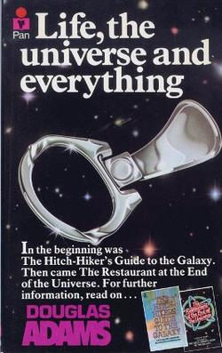
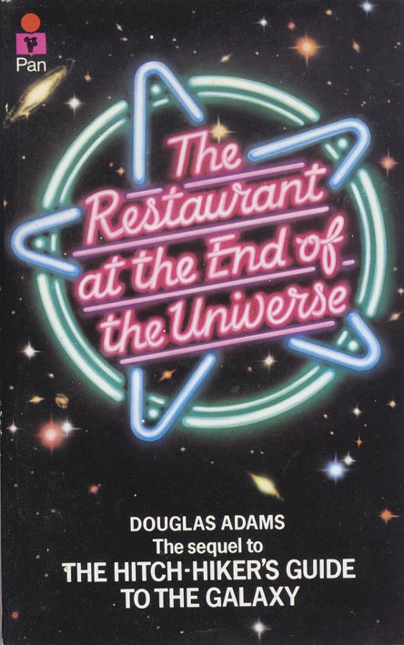
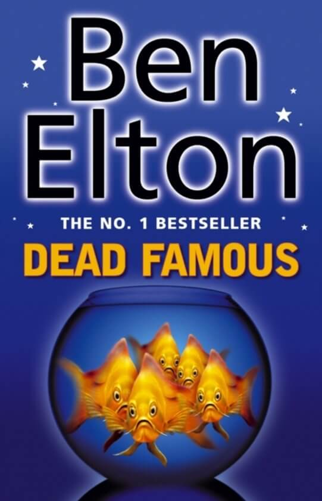
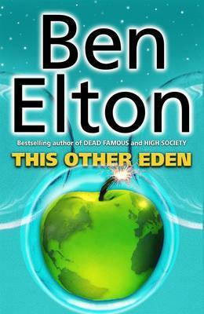

Bookshelf
-

Gulag: A History
Anne Applebaum
This landmark book uncovers for the first time in detail one of the greatest horrors of the twentieth century: the vast system of Soviet camps that were responsible for the deaths of countless millions.
Gulag is the only major history in any language to draw together the mass of memoirs and writings on the Soviet camps that have been published in Russia and the West. Using these, as well as her own original research in NKVD archives and interviews with survivors, Anne Applebaum has written a fully documented history of the camp system: from its origins under the tsars, to its colossal expansion under Stalin's reign of terror, its zenith in the late 1940s and eventual collapse in the era of glasnost. It is a gigantic feat of investigation, synthesis and moral reckoning.
-

Creativity, Inc.
Ed Catmull
As a young man, Ed Catmull had a dream: to make the world’s first computer-animated movie. He nurtured that dream first as a Ph.D. student at the University of Utah, where many computer science pioneers got their start, and then forged an early partnership with George Lucas that led, indirectly, to his founding Pixar with Steve Jobs and John Lasseter in 1986. Nine years later and against all odds, Toy Story was released, changing animation forever.
Since then, Pixar has dominated the world of animation, producing such beloved films as Monsters, Inc., Finding Nemo, The Incredibles, Up, and WALL-E, which have gone on to set box-office records and garner twenty-seven Academy Awards. The joyousness of the storytelling, the inventive plots, the emotional authenticity: In some ways, Pixar movies are an object lesson in what creativity really is. Now, in this book, Catmull reveals the ideals and techniques, honed over years, that have made Pixar so widely admired―and so profitable.
Creativity, Inc. is a book for managers who want to lead their employees to new heights, a manual for anyone who strives for originality, and the first-ever, all-access trip into the nerve center of Pixar Animation Studios―into the story meetings, the postmortems, and the ‘Braintrust’ sessions where art is born. It is, at heart, a book about how to build and sustain a creative culture―but it is also, as Pixar co-founder and president Ed Catmull writes, ‘an expression of the ideas that I believe make the best in us possible.’
-

If at Birth You Don't Succeed
Zach Anner
Comedian Zach Anner opens his frank and devilishly funny book, If at Birth You Don't Succeed, with an admission: he botched his own birth. Two months early, underweight and under-prepared for life, he entered the world with cerebral palsy and an uncertain future. So how did this hairless mole-rat of a boy blossom into a viral internet sensation who's hosted two travel shows, impressed Oprah, driven the Mars Rover, and inspired a John Mayer song? (It wasn't "Your Body is a Wonderland.")
Zach lives by the mantra: when life gives you wheelchair, make lemonade. Whether recounting a valiant childhood attempt to woo Cindy Crawford, encounters with zealous faith healers, or the time he crapped his pants mere feet from Dr. Phil, Zach shares his fumbles with unflinching honesty and characteristic charm. By his thirtieth birthday, Zach had grown into an adult with a career in entertainment, millions of fans, a loving family, and friends who would literally carry him up mountains.
If at Birth You Don't Succeed is a hilariously irreverent and heartfelt memoir about finding your passion and your path even when it's paved with epic misadventure. This is the unlikely but not unlucky story of a man who couldn't safely open a bag of Skittles, but still became a fitness guru with fans around the world. You'll laugh, you'll cry, you'll fall in love with the Olive Garden all over again, and learn why cerebral palsy is, definitively, "the sexiest of the palsies."
-

Life, the Universe and Everything
Douglas Adams
In consequence of a number of stunning catastrophes, Arthur Dent is surprised to find himself living in a hideously miserable cave on prehistoric Earth. However, just as he thinks that things cannot get possibly worse, they suddenly do. He discovers that the Galaxy is not only mind-boggingly big and bewildering but also that most of the things that happen in it are staggeringly unfair.
-

The Restaurant at the End of the Universe
Douglas Adams
If you've done six impossible things this morning, why not round it off with breakfast at Milliways, the Restaurant at the end of the Universe?
Which is exactly what the crew of the Heart of Gold plan to do. There's just the small matter of escaping the Vogons, avoiding being taken to the most totally evil world in the Galaxy and teaching a space ship how to make a proper cup of tea.
And did anyone actually make a reservation?
-

Dead Famous
Ben Elton
One house. Ten contestants. Thirty cameras. Forty microphones.
Yet again the public gorges its voyeuristic appetite as another group of unknown and unremarkable people submit themselves to the brutal exposure of the televised real-life soap opera, House Arrest.
Everybody knows the rules: total strangers are forced to live together while the rest of the country watches them do it. Who will crack first? Who will have sex with whom? Who will the public love and who will they hate? All the usual questions. And then, suddenly, there are some new ones.
Who is the murderer? How did he or she manage to kill under the constant gaze of the thirty television cameras? Why did they do it? And who will be next?
-

The Hitchhiker's Guide to the Galaxy
Douglas Adams
Seconds before the Earth is demolished to make way for a galactic freeway, Arthur Dent is plucked off the planet by his friend Ford Prefect, a researcher for the revised edition of The Hitchhiker's Guide to the Galaxy who, for the last fifteen years, has been posing as an out-of-work actor.
Together this dynamic pair begin a journey through space aided by quotes from The Hitchhiker's Guide ("A towel is about the most massively useful thing an interstellar hitchhiker can have") and a galaxy-full of fellow travelers: Zaphod Beeblebrox--the two-headed, three-armed ex-hippie and totally out-to-lunch president of the galaxy; Trillian, Zaphod's girlfriend (formally Tricia McMillan), whom Arthur tried to pick up at a cocktail party once upon a time zone; Marvin, a paranoid, brilliant, and chronically depressed robot; Veet Voojagig, a former graduate student who is obsessed with the disappearance of all the ballpoint pens he bought over the years.
Where are these pens? Why are we born? Why do we die? Why do we spend so much time between wearing digital watches? For all the answers stick your thumb to the stars. And don't forget to bring a towel!
-

This Other Eden
Ben Elton
Small, well appointed future. Semi detached.
If the end of the world is nigh, then surely it’s only sensible to make alternative arrangements. Certainly the Earth has its good points, but what most people need is something smaller and more manageable. Of course there are those who say that’s planetary treason, but who cares what the weirdos and terrorists think? Not Nathan. All he cares is that his movie gets made and that’s there’s somebody left to see it.
In marketing terms the end of the world will be very big. Anyone trying to save it should remember that.